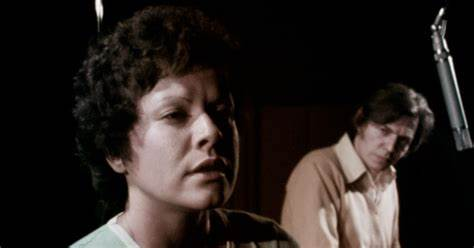

O longa-metragem teve as suas primeiras exibições no Festival do Rio 2022 e na 46ª Mostra Internacional
de Cinema de São Paulo – neste último, ganhou o prêmio da crítica de Melhor Filme Brasileiro. Em maio de 2023,
a produção foi exibida a importantes players em um market screening no Marché du Film do Festival de Cannes,
grande evento do mercado cinematográfico internacional. O filme também já passou pelo Festival de Cinema Brasileiro em Lima
(Peru), Festival de Cinema Brasileiro em Paris (França) e In-Edit 2023 (Brasil).
Elis e Tom, Só Tinha de Ser Com Você é uma experiência cinematográfica imersiva que transporta o espectador para os bastidores de um dos
mais icônicos álbuns da música popular brasileira – que foi marcado por dramas e tensões a ponto de o projeto quase ser interrompido.